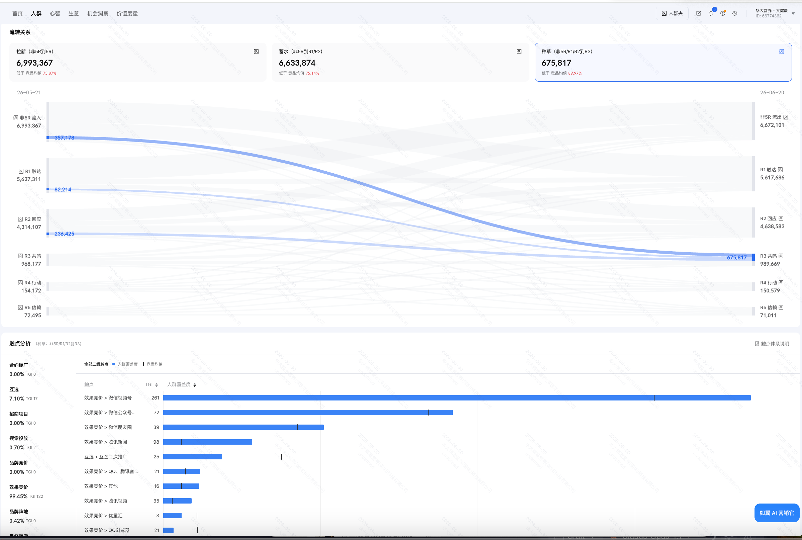
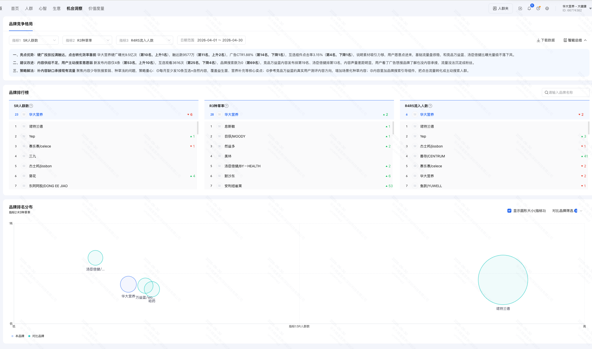
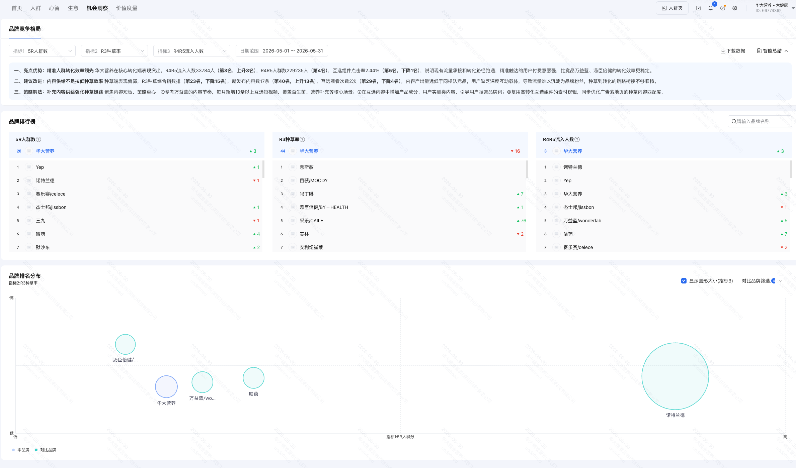
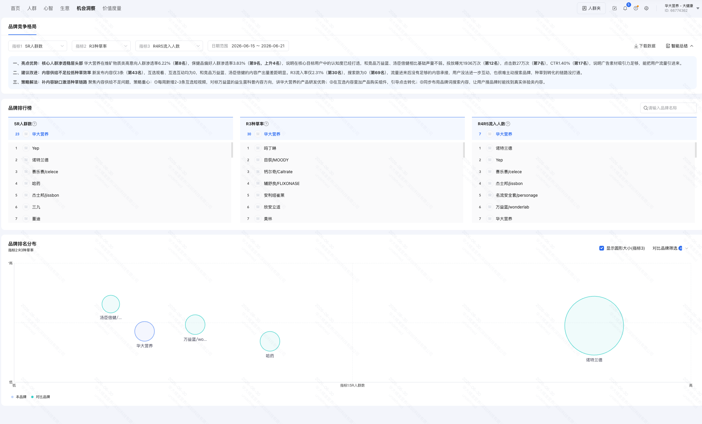

数据来源：如翼旗舰版 · 品牌人群资产看板 · 数据周期 2026-05-25 至 2026-06-23（近 30 天）

数据来源：如翼旗舰版 · 触点分析 · 数据周期 2026-05-25 至 2026-06-23（近 30 天）

将互选触点占比从 3.78% 提升至 15% 以上，配套视频号种草投放，建立 R3 资产沉淀的稳定来源。
该动作不依赖总预算增加，建议通过预算结构再分配——将效果竞价侧边际效率已下降的部分预算，迁移至互选与视频号种草触点。
数据来源：如翼旗舰版 · 品牌竞争格局 · 数据周期 2026-04 / 2026-05 / 2026-06-15 至 06-21



| 排名维度 | 含义 | 4 月 | 5 月 | 6/15-6/21 | 趋势判断 |
|---|---|---|---|---|---|
| 5R 人群数 | 存量盘子（投入端） | 第 23 名 ▼6 | 第 20 名 ▲3 | 第 23 名 | 🟡 存量盘子在 TOP25 徘徊，4 个月没突破 |
| R3 种草率 | 共鸣效率（产出端） | 第 28 名 ▲2 | 第 44 名 ▼16 | 第 30 名 | 🟡 5 月谷底反弹但仍在中游 |
| R4R5 流入人数 | 转化端 | 第 6 名 ▼2 | 第 3 名 ▲3 | 第 7 名 ▼4 | 🟠 5 月冲顶后 6 月掉队（漏斗传导信号） |
三个月的如翼智能总结中，"亮点优势"侧表述每月不同，但"建议改善"侧均明确指向同一问题：内容供给不足拉低种草效率。
过去 6 个月，华大主要依靠"素材 + 效果竞价"双发力承接种草环节。 该路径依托优秀的素材打磨能力（4 月互选组件点击率行业第 4、CTR 行业第 14）， 在效果竞价端高效完成了 R1/R2 资产沉淀与 R4/R5 转化承接，构成华大当前的核心竞争力来源。
该路径在 0→1 阶段具备显著的投入产出效率优势，但 3 个月数据已显示边际效益拐点：
• 5R 人群数：4 月第 23 → 5 月第 20 → 6 月第 23，存量盘子 4 个月未实现行业排名突破
• R3 种草率：4 月第 28 → 5 月第 44 → 6 月第 30，共鸣效率持续位于中游
• R4R5 流入人数：5 月第 3 → 6 月第 7，转化端排名首次出现下滑，存量 R3 消耗信号显现
• 如翼智能总结：连续 3 个月将"内容供给不足"列为首要改善项
核心判断：素材 + 竞价路径的边际效益已接近上限，需引入第二曲线—— 建立"达人 + 互选 + 内容"的品牌端 R3 资产沉淀能力，与现有效果端能力形成双引擎。
① 5R 漏斗结构：R3 共鸣率 8.88%，较竞品均值 18.63% 低 9.75pp，存量 R3 已被高效转化至 R4/R5
② 触点结构分布：效果竞价占 98.84%，互选 3.78%、视频投放 0.61%、品牌广告 0%，品牌端 R3 资产沉淀触点缺位
③ 3 个月行业排名：5R 人群数 4 个月未突破 TOP20，R4R5 流入排名 5 月第 3 → 6 月第 7 出现首次下滑；如翼智能总结连续 3 个月将"内容供给不足"列为首要改善项
99 品牌日是 H1 启动第二曲线的关键窗口期——通过"达人 + 互选 + 内容"建立稳定的 R3 资产沉淀来源，为 Q4 双 11 等大型节点提供品牌端弹药储备。
第二曲线建设的前提是延续第一曲线的能力沉淀，两者并行运作而非互相替代。
· 广告曝光行业第 10 名（9.5 亿）
· 互选组件点击率行业第 4 名（3.15%）
· R4R5 转化效率排名 TOP5
· 维矿物质类高意向人群渗透率 6.22%（第 8）
定位：持续承接 R1/R2 资产、放大 R4/R5 转化，维持现有生意基本盘的稳定输出。
· R3 共鸣率 8.88%（较竞品均值低 9.75pp）
· R4R5 流入排名 5 月第 3 → 6 月第 7
· 6 月新发布内容 3 条（行业第 43）
· 互选观看/互动数为 0
定位：建立品牌端 R3 资产沉淀的稳定来源，为第一曲线持续输送可转化的高质量人群池。
该方法论已在膳食行业头部品牌（隐去具体品牌名）验证，关键基准：R3 单人沉淀成本 1.13 元、互选触点占比 17.37%。
华大本年度尚未启动达人合作，因此本动作不是从既有名单中筛选，而是基于如翼系统从底层数据反查构建达人池。
| Step | 动作 | 产出 |
|---|---|---|
| ① | 定义种子人群（华大 R3 资产 + 商品偏好 + 视频号 TGI 281 三层叠加） | 种子人群包 1 个 |
| ② | 水晶球 10 维度反查（人群属性 / 行业偏好 / 品牌共鸣 / 媒体位 / 视频号达人 / 公众号达人 / 明星粉丝 / 长视频 / 音乐流派 / 商品偏好） | 10 维度画像报告 |
| ③ | 钜如翼反推 IP、翼红人反推达人，三处结果交叉验证 | 达人候选短名单 N 位待定 |
| ④ | 投放端按"种子相似度 + 种子渗透率"双指标分层（精准触达 vs 破圈拓新） | 达人投放分组方案 |
本动作为 99 项目的结构性调整：在总预算不变的前提下，将效果竞价中边际效率较低的部分预算切换至互选触点，补强品牌资产沉淀能力。
- 互选节奏：99 大场前 4-6 周启动，覆盖视频号腰部达人与公众号科普类账号双触点
- 视频号互选：聚焦"科学健康 · 知性女性"调性（对齐华大用户画像 TGI 281）
- 公众号互选：双线布局——肠道菌群健康科普（67%）+ 脑肠轴差异化心智（33%），构建被搜索的内容资产
- 触点考核：以 R3 流入率 为单一 KPI，不以阅读量、CPM 作为评估口径
基于华大腾讯生意结构（肠道 80% / 睡眠 5% / 体重 15%），99 种草内容按 6-7 成肠道 · 3-4 成睡眠 比例分配，体重品类不参与 99 节点保持日常节奏：
| # | 钩子方向 | 核心场景 | 承接 SKU | 心智线 |
|---|---|---|---|---|
| ① | 华大基因医学背景：菌株证据链与临床数据 | 科学派人群 · 信任建立 | 益畅（肠道） | 肠道 |
| ② | 肠道菌群多样性与免疫力的关联 | 注重免疫力的家庭主妇/中产 | 益畅（肠道） | 肠道 |
| ③ | 办公族久坐肠道紊乱的科学修复方案 | 一二线职场人群 | 益畅（肠道） | 肠道 |
| ④ | 母婴/家庭场景：从孩子到长辈的肠道健康 | 家庭健康决策者 | 益畅（肠道） | 肠道 |
| ⑤ | 睡眠质量与肠道菌群代谢物的关联（脑肠轴） | 夜间易醒、入睡困难 | 睡眠益生菌 | 睡眠 |
| ⑥ | 褪黑素之外的替代方案：脑肠轴调节路径 | 褪黑素依赖人群 | 睡眠益生菌 | 睡眠 |
由 99 大场倒推 4-6 周对应 7 月下旬启动，建议在 7/22 前完成动作 ① 的达人短名单交付与预算切分确认。
| 阶段 | 时间 | 核心动作 | R3 目标 |
|---|---|---|---|
| 第一阶段 · 立调性 | 7/22 - 8/4（2 周） | 视频号互选 + 公众号互选启动，建立"科学派 + 知性女性"调性 | R3 流入 待估 |
| 第二阶段 · 放规模 | 8/5 - 8/25（3 周） | 达人种草矩阵 + 视频号加热 + 直播预约组件全量开启 | R3 流入 待估 |
| 第三阶段 · 收口转化 | 8/26 - 9/9（2 周） | 达人进品牌直播间专场 + 99 当天大场承接 | R3→R4 转化 |
本动作与传统"达人种草视频独立投放"模式的核心区别在于：头部达人在 99 当天进入华大品牌直播间专场坐镇 1-2 小时，实现 R3 至 R4 的同链路转化。
- 同一达人覆盖"种草视频 → 直播预约组件 → 99 当天专场"全链路，避免流量断点
- 专场内容形式：达人 + 华大产品研发负责人对谈式直播，输出推荐逻辑
- 选品结构：益畅（肠道）为主力保盘 65%，睡眠益生菌借脑肠轴心智做第二曲线增量 35%；体重品类不参与 99 大场
- 预算结构：达人专场坑位费 + 商品直播投放叠加
本节是动作 ① 的完整操作示范，呈现如翼系统从种子人群到达人池的反查路径与产出形态。

💡 点击图片查看大图细节
| 维度 | 华大种子人群水晶球下钻结果 | 对动作 ① 选人的指导意义 |
|---|---|---|
| 视频号偏好 | 已知 TGI 281 · 待补全 | 视频号为华大用户主场，达人优选视频号腰部 |
| 音乐流派 | 已知古典音乐 4.77% | 偏好"高知 · 文艺"调性的科学派达人 |
| 商品偏好 | 已知大健康加油包渗透率最高 | 家庭健康场景达人具备破圈潜力 |
| 地域分布 | 北京 244 / 江苏 161 / 浙江 111 | 北上广深与长三角女性达人优先 |
| 明星粉丝 | 待补全 | 反推种子人群关注明星，作为好物体验官候选 |
| 公众号达人 | 待补全 | 公众号互选触点的选号依据 |
| 其余 4 维度 | 待补全 | — |
200 万种草预算拆为 50万 / 100万 / 50万 三轮投放，每一轮基于上一轮真实数据重分配 R3/R4/R5 比例——把"一次性押注"改造为"测试 → 放量 → 收口"的渐进式投放节奏，6 周内有 2 次重新决策机会。
睡眠 17.5 万（35%）
产出：双线 ROI 排行（肠道 vs 睡眠）+ R 层效率信号
关键：双线比例 + R 层比例双重重分配——不预设比例，让数据决策
目标：R3 → R4 转化窗口期承接、99 当日 GMV 释放
6 波 AI 智选人群已于 6/27 生成（有效期 180 天），按肠道（益畅）+ 睡眠（益生菌）双线撒网，每条线内再做 R3/R4/R5 三层达人池匹配——R3 偏心智型、R4 偏转化型、R5 偏复购场景。
| 人群名 / 体量 | R3 心智盘 | R4 转化盘 | R5 收割盘 |
|---|---|---|---|
| 99 母婴人群 1.05 亿 |
母婴肠道科普达人 2 位 建议 3 万 |
— | 家庭复购场景达人 1 位 建议 2 万 |
| 99 爱刚微信科普女 2,400 万 |
视频号知性肠道科普达人 3 位 建议 5 万 · 主战场 |
— | — |
| 99 一二线中产知性妈 5,700 万 |
母婴成长向达人 1 位 建议 2 万 |
直播挂车型达人 2 位 建议 4 万 |
— |
| 99 高知养生群体 5,400 万 |
健康科普达人 2 位 建议 3.5 万 · 肠道心智主推 |
— | — |
| 99 破圈品质自律 5,778 万 |
— | 品质生活转化达人 4 位 建议 8.5 万 · R4 主战场 |
— |
| 99 高知养生群体（复购） 5,400 万 |
— | — | 肠道老客复购达人 2 位 建议 4.5 万 |
| 肠道线合计 | 8 位达人 · 13.5 万 | 6 位达人 · 12.5 万 | 3 位达人 · 6.5 万 |
| 人群名 / 体量 | R3 心智盘 | R4 转化盘 | R5 收割盘 |
|---|---|---|---|
| 99 中产失眠女性 1,300 万 |
脑肠轴科普达人 1 位 建议 2 万 |
睡眠益生菌专场达人 1 位 建议 4 万 |
睡眠益生菌复购达人 2 位 建议 8 万 · R5 主战场 |
| 99 高知养生群体（睡眠场景） 5,400 万 |
脑肠轴心智达人 1 位 建议 2 万 |
— | — |
| 99 爱刚微信科普女（睡眠场景） 2,400 万 |
褪黑素替代方案科普 1 位 建议 1.5 万 |
— | — |
| 睡眠线合计 | 3 位达人 · 5.5 万 | 1 位达人 · 4 万 | 2 位达人 · 8 万 |
| — | 肠道线 | 睡眠线 | 合计 |
|---|---|---|---|
| 预算 | 32.5 万（65%） | 17.5 万（35%） | 50 万 |
| 达人数 | 17 位 | 6 位 | 23 位 |
| R3 投入 | 13.5 万 | 5.5 万 | 19 万 |
| R4 投入 | 12.5 万 | 4 万 | 16.5 万 |
| R5 投入 | 6.5 万 | 8 万 | 14.5 万 |
2️⃣ 双线效率对比：肠道线（32.5 万）vs 睡眠线（17.5 万）单位预算 ROI 谁更高——验证"主力保盘 + 第二曲线"假设
3️⃣ 人群效率排行：哪 2-3 波人群 ROI 最高（推测：高知养生 / 中产失眠 / 爱刚科普女 大概率胜出）
4️⃣ R 层效率信号：R3 沉淀单价是否 ≤ 2.0 元、R4 转化 ROI 是否 ≥ 2.5、R5 复购 ROI 是否 ≥ 3.5
5️⃣ 调整决策：双线比例 + R 层比例双重重分配——第 2 轮 100 万按此结构投放
7/22-7/28
7/29-8/4
8/5-8/11
8/12-8/18
8/19-8/25
8/26-9/9
| 周次 | 时间 | 投放轮次 | 核心动作 | 关键里程碑 / 决策节点 |
|---|---|---|---|---|
| W1 | 7/22 - 7/28 | R1 测试盘启动 | 动作 ① 完成 · 6 波人群 × R3/R4/R5 达人短名单交付 · 启动测试投放 | SOP 跑通 · 第 1 轮投放上线 |
| W2 | 7/29 - 8/4 | R1 测试盘收官 | 动作 ②/③ 启动 · 互选 + 内容母版打磨 · 收集 R1 真实 ROI 数据 | 🔄 决策点 ①：R1 数据复盘会 · 重分配 R2 比例 |
| W3 | 8/5 - 8/11 | R2 放量盘启动 | 动作 ③ 进入第二阶段 · 视频号加热铺量 · 按 R1 实测比例投放 R2 | R3 流入提速 · R2 第一波数据观察 |
| W4 | 8/12 - 8/18 | R2 放量盘加压 | 互选 + 达人种草双引擎齐发 · 头部组合加投 | R3 流入峰值 · 中段健康度复盘 |
| W5 | 8/19 - 8/25 | R2 收官 | 动作 ④ 直播预约组件挂载 · 资产前置冲刺 | 🔄 决策点 ②：R2 数据复盘会 · 重分配 R3 比例 |
| W6 | 8/26 - 9/2 | R3 收口盘启动 | 动作 ⑤ · 达人专场密集排播 · 头部组合 ALL IN | R3 → R4 转化窗口打开 |
| 99 | 9/3 - 9/9 | R3 大场承接 | 99 品牌日大场 · 直播间 + 达人专场双引擎承接 | 🎯 GMV 与 R4 同步释放 |
本节不预设具体收益数字——任何一次性数字承诺，对客户与执行方都是双向风险。我们交付的是一套"信号检测 + 红绿黄灯决策 + 主动止损"机制，让 200 万预算的每一轮投放都有真实数据作为下一轮决策依据。
| 信号维度 | 🟢 绿灯（放量） | 🟡 黄灯（调整后放量） | 🔴 红灯（暂停 R2） |
|---|---|---|---|
| R3 沉淀单价 | ≤ 2.0 元/人 | 2.0 - 3.0 元/人 | > 3.0 元/人 |
| R4 转化 ROI | ≥ 2.5 | 1.5 - 2.5 | < 1.5 |
| R5 复购 ROI | ≥ 3.5 | 2.0 - 3.5 | < 2.0 |
| 单达人 ROI 收敛度 | Top3 达人 ROI > 整体均值 1.5 倍 | Top3 略高于均值 | 各达人 ROI 趋同 · 无明显头部 |
| 🧬 双线效率比对 肠道 vs 睡眠 单位预算 ROI | 两线 ROI 偏差 ≤ 25%（双线均跑通） | 偏差 25%-50%（弱线需调结构） | 偏差 > 50%（弱线建议下沉至 R2 ≤ 20%） |
| 信号维度 | 🟢 绿灯（收口） | 🟡 黄灯（调整结构后收口） | 🔴 红灯（暂停 R3） |
|---|---|---|---|
| R3 流入率提升 | 相较 R1 末位 ≥ 30% | 提升 10% - 30% | 提升 < 10% 或下滑 |
| 头部组合 ROI 保持 | R1 Top3 组合在 R2 ROI 保持 ≥ 80% | 保持 50% - 80% | 保持 < 50%（规模化失效） |
| 累计 R3 净流入 | R1+R2 累计达预期目标值 | 达成 70% - 100% | < 70% |
| 互选触点占比 | 从 3.10% 提升至 ≥ 10% | 提升至 6% - 10% | 提升 < 6% |
| 🧬 双线 R3 沉淀效率 规模化后是否保持差异化 | 肠道 R3 沉淀提速 ≥ 30%、睡眠 R3 占比稳定在 25-40% | 一线提速、另一线持平 | 双线均无明显提速 |
| 信号维度 | 🟢 绿灯（Q4 复用） | 🟡 黄灯（Q4 优化方向） | 🔴 红灯（Q4 重新评估） |
|---|---|---|---|
| R3 → R4 转化率 | ≥ 15%（行业头部水平） | 8% - 15% | < 8% |
| 99 当日 GMV 同比 | 同比 H1 单日峰值 ≥ +30% | +10% - +30% | 同比下滑或 < +10% |
| R3 资产存量增长 | R3 占比从 8.88% 提升至 ≥ 12% | 提升至 10% - 12% | 提升 < 10%（未达基线） |
| 99 后 30 天 R3 留存 | 留存率 ≥ 60% | 40% - 60% | < 40%（短期流失） |
| 🧬 双线 GMV 贡献度 益畅 vs 睡眠益生菌 99 当日 GMV 拆分 | 肠道仍占 60%+（主力保盘成立） 睡眠 ≥ 15%（第二曲线孵化成功） | 肠道 50-60% 或睡眠 8-15% | 肠道 < 50%（主盘动摇）或睡眠 < 8%（第二曲线失败） |
R2 复盘：7 个工作日内交付
R3 复盘：99 后 10 个工作日内交付（含 99 当日全口径数据）
腾讯营销侧交付 系统反查能力 + 内容母版脚手架 + 作战节奏对齐，最终拍板权在品牌方。